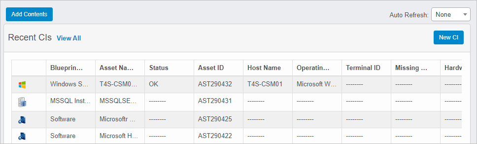
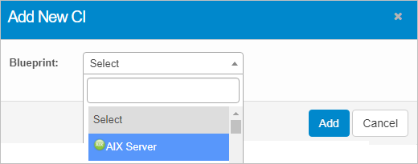
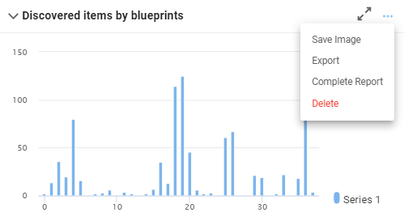

Configuration Management: Dashboard
Use this function to view different types of data. The dashboard can be customized.
| There is no limit on the number of reports that can be added to the dashboard. |
| 1. | In the navigation pane, select Configuration Management > Dashboard. The Configuration Management Dashboard window displays. |

| 2. | Click View All to open the applicable functions for the selected items. |
| 3. | Click Show All to open the applicable function for the selected record. |
| 4. | To add content to the dashboard, click Add Contents. |
| 5. | To add a new configuration item, click New CI. The Add New CI dialog box displays. |

| a. | In the Blueprint field, click the drop-down list and select the applicable CI, using the Search field, if necessary. The window refreshes and displays the applicable fields for the selected CI. For example if |
| b. | Enter the details for the CI. Refer to Configuration Management. |
| c. | When all selections/entries are made, click Add. |
| 6. | To perform functions for the displayed reports (examples below), on the dashboard, click the three dots. |


Any of the following options are available (and determined by report type):
Save Image. Saves the selected report as an image file.
Export. The information is automatically downloaded. An email confirmation is sent when the download is complete.
Complete Report. This function is under development.
Delete. Removes the current report from the dashboard.
Other Functions and Page Elements